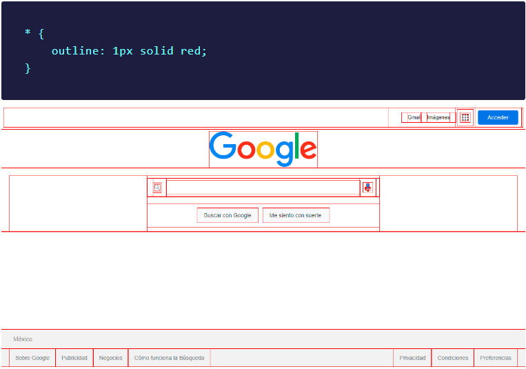
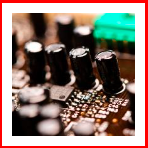
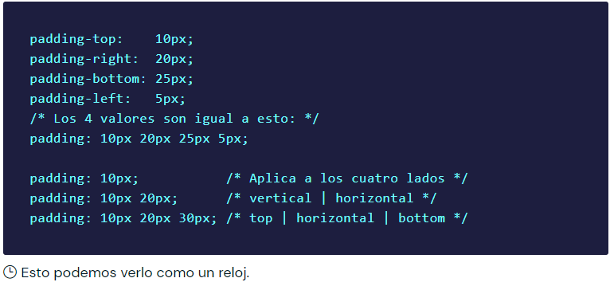
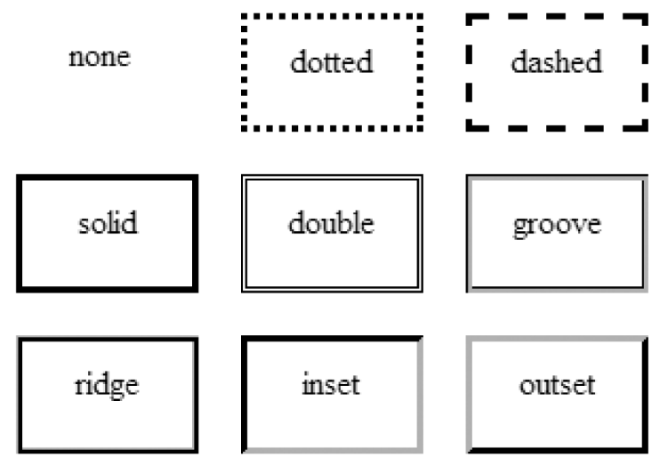

Inicio
¡Hola gente bonita!👋
En este artículo, voy a explicar como funciona el box-model y por qué se llama de esa manera. Además,
también te daré una visión más profunda del comportamiento del modelo de caja.
🧐 Introducción al modelo de caja
El nombre 'box-model' (modelo de caja) se llama así porque, en los navegadores, todo se construye a partir
de cajas.
Entonces, lo primero que debemos de entender, es que cada elemento que definimos en un documento HTML se
mostrará en el navegador como una caja rectangular esta es la forma en que se representan todos los
elementos, no existen elementos triangulares, redondos, poligonales etc. Todos los elementos en HTML por
defecto son rectangulares ya que internamente el navegador dibuja un rectángulo.
⚠️ Las únicas excepciones son las listas y las tablas, que generan más de una caja, y los elementos con
display: none o display: contents, que no crean ninguna caja.
Aunque usted visualice en un sitio web algún elemento diseñado en CSS que utiliza border-radius para parecer
un círculo, ese elemento seguirá siendo rectangular y esto es porque como he dicho anteriormente cada
elemento del diseño web es una caja, el navegador renderiza cada elemento de la página web como un elemento
rectangular y con CSS nosotros definimos las propiedades como el tamaño, el color, los estilos, el margen y
mucho más de estos elementos rectangulares.
Esto puedes comprobarlo con el siguiente ejemplo, con ayuda de la propiedad outline, podemos ver todos los
elementos de la pagina de inicio de Google de forma rectangular y esto lo puedes hacer con cualquier otro
sitio web.

El navegador Microsoft Edge tiene una herramienta llamada 3D view que además de encontrar áreas de
anidamiento profundo del DOM y ayudar a la depuración de z-index también muestra todas las cajas
contenedoras de forma visual en 3D. Es uno de los mejores ejemplos visuales para poder comprender el box
model:

Como ya lo mencione anteriormente cada elemento HTML en una página web es una caja, pero hay dos tipos
básicos de cajas:
Block boxes.
Inline boxes.
Estos dos tipos de cajas, existieron desde el principio de la web:
📦 Cajas de bloque (Block boxes)
Las cajas de bloque, por defecto, ocupan todo el espacio a lo ancho del contenedor. El elemento HTML común
para una caja de bloque es el elemento
(div).
📦 Cajas en línea (Inline boxes)
Las cajas en línea, por defecto, toman el espacio según el contenido envuelto. El elemento HTML más común
para una caja en línea es el elemento (span).
El comportamiento de todas las cajas proviene de la propiedad display de CSS. Si quieres aprender más
acerca de esta propiedad te invito a leer mi articulo.
📦 Las áreas del modelo de caja
Como ya explique, cada elemento HTML es una caja que tiene 4 lados y se compone de cuatro áreas:
Internos:
content
padding
border
Externos:
margin
Estas áreas se apilan para formar el modelo de caja o box model. Cada elemento HTML es una caja que podemos
controlar en el espacio exterior con la propiedad margin, después, podemos darle un borde y con la propiedad
padding, también podemos proporcionar los espacios interiores entre el contenido y el borde dentro de la
caja.
🎦 Content
El contenido de la caja, donde aparecen texto, imágenes, etc.
El área del content (como su nombre lo dice) contiene el “contenido” central a mostrar, es decir, un texto,
una imagen, un video, etc. El contenido siempre es lo que queremos mostrarle al usuario. Esta área en muchas
ocasiones tiene un color o imagen de fondo para hacerla más atractiva.
Como podemos observar en la imagen, el contenido es el área central de todo el elemento, de tal forma, que
el siguiente elemento que lo rodea es el padding. El tamaño de esta área se puede modificar con las
propiedades height , width , max-height , max-width , min-height , min-width.

Cuando se establece una anchura o una altura en un elemento, esto sólo se aplica al área de contenido
(content) de la caja, no a la caja completa. El padding y border se añaden a la anchura y la altura para
obtener el tamaño total de la caja, si quieres profundizar mas en este tema, te invito a leer mi articulo de
box-sizing.
🔲 Padding
Es el área alrededor del contenido. El padding es transparente.
El padding es una separación o espacio interior que existe entre el contenido y el borde de la caja, el cual
se utiliza para dar una apariencia estética más atractiva y que el contenido no este pegado al borde.
Cabe mencionar que el padding sigue siendo parte de la caja visible, por lo que, si tenemos una imagen o
color de fondo, este se extenderá a través del padding. El padding está delimitado por el borde.
Puedes usar el mismo valor en toda la caja, por ejemplo, padding: 20px o puedes darle padding sólo a un lado
de la caja, por ejemplo, padding-right: 10px.
Recuerda que los valores pueden ser positivos o negativos.
Además, el shorthand padding permite dar un valor diferente a cada lado, sin necesidad de escribirlos por
separado. Por ejemplo:

⬜ Border
El borde es la línea que rodea la caja, es como la frontera que rodea al elemento, esta se utiliza para
darle una apariencia estética a la caja, pues nos permite dibujar una línea de algún color, la línea puede
tener los siguientes estilos:

Las tres propiedades básicas para crear bordes son:
border-style: sus valores son solid, dashed y dotted.
border-width: indica al navegador el tamaño del borde, normalmente, se utiliza el valor en píxeles para
esta propiedad, por ejemplo, border-width: 5px.
border-color: por defecto, el valor utiliza el currentColor del texto. Sin embargo, preferimos definirlo
aunque no sea necesario. Por ejemplo, border-color: red.
La mayoría de los desarrolladores web no utilizan estas tres propiedades por separado. En su lugar, existe
un shorthand: border. Con esta propiedad, podemos escribir sólo border: solid 5px red.
También podemos controlar y dar un estilo diferente a cada parte de los bordes, por ejemplo:

🔳 Margin
Es la separación entre una caja y las cajas adyacentes.
El margen es la última área del Box Model y se puede ver como una separación invisible o transparente que
ayuda a separar un elemento de otro. Cuando definimos un color o imagen de fondo, este no se propaga a esta
sección.
Los márgenes siempre quedan fuera del modelo de caja, por lo que pueden utilizarse para crear espacio entre
los elementos.
Recuerda que los valores pueden ser positivos o negativos.

Cada elemento tiene un margen gracias a las hojas de estilo del navegador.
⬜ Outline
Outline es la línea que rodea a la caja entre el border y el margin. Se utiliza para dibujar un contorno
alrededor de un elemento. Un contorno es una línea que se dibuja fuera de los bordes de un elemento. Se
puede utilizar con fines decorativos.
La propiedad outline no pertenece al modelo de caja sin embargo esta propiedad es una decoración gráfica que
hace que los elementos que ganan el foco, que son por lo general los (input), se coloren como con una ligera
aura que los rodea.
Las propiedades de outline son:
outline-width
outline-style
outline-color
outline-offset
📋 Conclusión:
☑️ Cada elemento HTML en una pagina web es una caja rectangular.
☑️ El contenido de la caja es donde
aparecen texto, imágenes, etc.
☑️ El padding es el área alrededor del contenido.
☑️ El borde es
una línea que rodea el padding y el content.
☑️ El margin es la separación entre una caja y las cajas
adyacentes.
Mockup

Bienvenido a mi sitio Web
Proyecto de sitio Web 2023 - 1391
Nombre: Maicol Barón
Programa: Ingeniería de Sistemas (Diseño de Sitios Web)
Fecha de Creación: 11 de Febrero del 2023
Mis datos de contacto son:
skype: maicolbaron
celular: 3202607492
email: mabaronj@unadvirtual.edu.co
PRUEBAS
Información Personal:
- Edad: 35 años
- Ciudad: Bogota
- Dirección: Cra 50 # 15-84
- País: Colombia